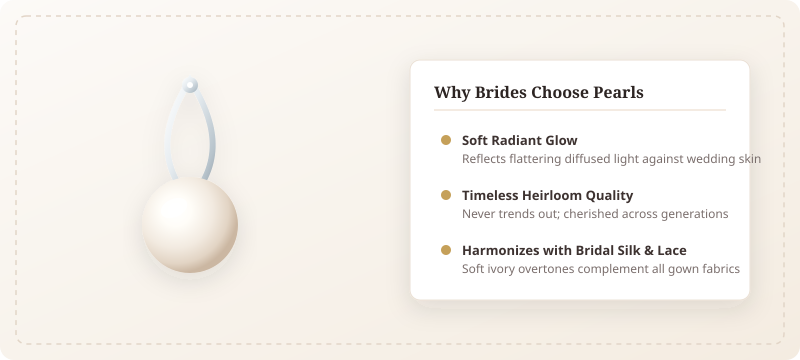
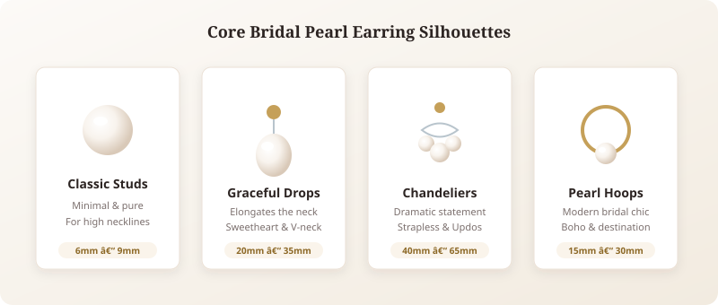
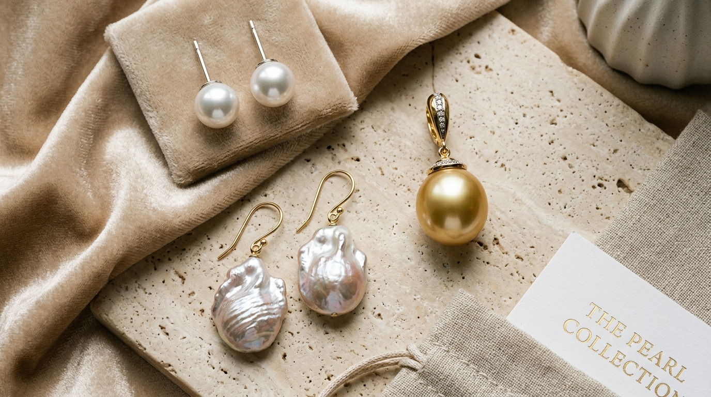
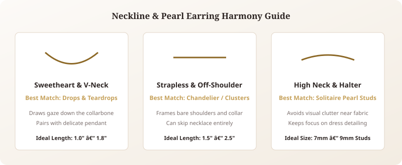
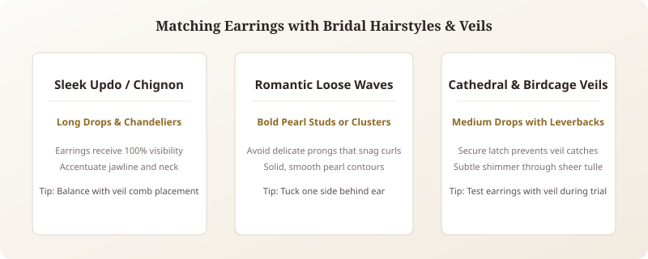
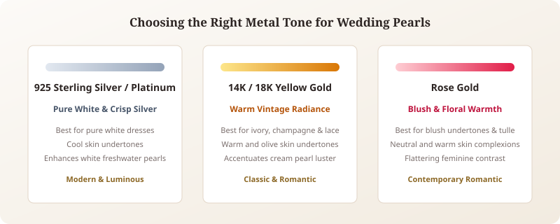
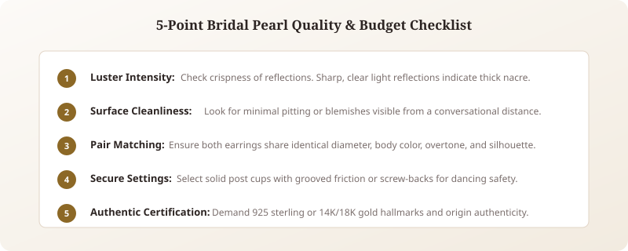
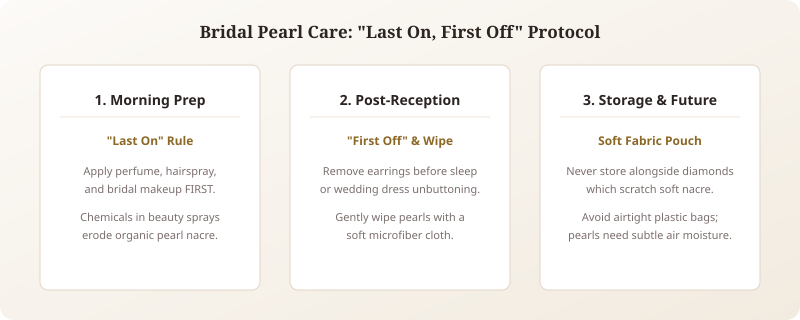

Choosing the right jewelry for your walk down the aisle is an intimate, unforgettable styling decision. Among all the treasures in fine jewelry, selecting bridal pearl earrings for wedding ceremonies remains an enduring tradition that bridges ancestral romance with contemporary haute couture. A luminous pearl captures morning light like no faceted stone can, casting a delicate, skin-flattering radiance across your face in every candid portrait.
Unlike fleeting jewelry fads, bridal pearls carry an organic warmth that complements delicate lace trims, floating tulle veils, and minimalist satin silhouettes. Whether you envision understated pearl stud earrings for wedding vows, dramatic pearl drop earrings for bride portraits, or modern pearl hoops for a seaside celebration, finding the perfect pair requires thoughtful attention to gown necklines, bridal hairstyles, metal tones, and pearl varieties. In this comprehensive guide, we walk you through every nuance to ensure your wedding earrings feel sublime and stay treasured for decades to come.
1. Why Pearls Are a Timeless Choice for Brides

For millennia, pearls have been celebrated as symbols of purity, wisdom, harmony, and lasting devotion. Historically revered by royal brides and celebrated across cultures, pearls possess an organic origin unlike any mined mineral. Formed naturally within living mollusks, every pearl represents resilience, patient transformation, and quiet luxury.
From an artistic perspective, wedding photographers cherish pearls because their soft nacre produces a diffused luster rather than sharp camera glare. When sunlight touches a pearl, it gently refracts, bathing the bride’s cheekbones and jawline in a flattering natural luminescence. Furthermore, pearls evoke an emotional connection: they are one of the few bridal accessories destined to become cherished family heirlooms, worn again at milestone anniversaries or passed down lovingly to future generations.
Key Bridal Takeaways: The Pearl Advantage
- Soft Skin Illumination: Diffused natural nacre bounce creates flattering glow in photographic portraits.
- Universal Fabric Harmony: Natural ivory, cream, and champagne overtones complement silk, chiffon, and lace.
- Sentimental Longevity: Versatile enough to wear for post-wedding dinner dates, anniversaries, and family celebrations.
2. Types of Bridal Pearl Earrings: Finding Your Ideal Silhouette

Bridal earring silhouettes range from whisper-light minimalism to opulent botanical chandeliers. Discovering your ideal silhouette depends on your gown's neckline complexity, your personal style, and your reception footwear comfort.
Pearl Stud Earrings for Understated Elegance
The epitome of timeless grace, pearl stud earrings wedding designs rest flush against the earlobe. Ranging from discreet 6mm cultured spheres to substantial 9mm statement pearls, studs offer clean symmetry without competing with ornate lace bodices or statement bridal necklaces. If your wedding gown features elaborate hand-beading, an illusion high neck, or an opulent tiara, solitaire pearl studs provide polished balance.
Pearl Drop Earrings for Graceful Movement
Few accessories capture bridal romance quite like pearl drop earrings for bride ceremonies. Suspended from delicate sterling silver or gold ear wires, pear-shaped or teardrop pearls sway gently with every step you take down the aisle. The vertical drop creates an elongating optical effect along the neck and collarbone, making drop earrings exceptionally flattering for sweetheart, strapless, and V-neck wedding gowns.
Pearl Chandelier and Climber Earrings
For brides who desire high-fashion drama or a vintage Art Deco flair, chandelier earrings arrange cascading clusters of pearls paired with sparkling moissanite or floral metalwork. Ear climbers, conversely, feature a progressive arc of graduating pearls that sweep along the ear cartilage, giving modern bohemian brides an avant-garde, ethereal flourish.
Pearl Hoops and Huggies
Modern brides are increasingly embracing pearl-accented huggies and delicate hoops for destination weddings, garden nuptials, and civil ceremonies. Featuring lustrous seed pearls wire-wrapped along a polished precious metal hoop, they infuse effortless chic into romantic loose curls and sleek bridal slip dresses.
3. Understanding Pearl Varieties: Freshwater, Akoya, South Sea, and Tahitian

Not all pearls are created equal. Understanding the geological and biological origins of different pearl varieties empowers you to choose bridal jewelry that aligns with your aesthetic expectations and wedding budget.
| Pearl Variety | Typical Luster | Standard Size Range | Common Shapes | Best Suited For |
|---|---|---|---|---|
| Freshwater | Soft, warm satin glow | 6.0mm – 12.0mm | Round, oval, baroque, drop | Exceptional bridal value, organic styles |
| Japanese Akoya | Mirror-like, sharp reflection | 6.0mm – 9.0mm | Nearly 100% spherical | Classic ballgowns, formal black-tie vows |
| South Sea (White & Gold) | Deep, satiny velvety luster | 9.0mm – 16.0mm | Round, teardrop, baroque | Luxury statement drops, regal heirloom gowns |
| Tahitian (Dark / Peacock) | Metallic, iridescent dark sheen | 8.0mm – 14.0mm | Drop, round, circled | Moody celestial weddings, evening drama |
| Faux / Crystal Pearl | Uniform synthetic gloss | 4.0mm – 14.0mm | Uniform round beads | Budget-conscious bridesmaid multi-packs |
Cultured freshwater pearls remain the most popular choice for modern brides due to their thick solid nacre and remarkable durability. Cultured Akoya pearls, farmed primarily in coastal Japan, offer the sharpest surface luster and iconic roundness, making them the gold standard for traditional bridal studs. For brides seeking monumental scale and dramatic presence, Australian South Sea pearls provide unmatched grandeur.
4. How to Match Pearl Earrings with Your Wedding Dress Neckline

Your wedding dress neckline establishes the visual frame around your face and shoulders. Achieving seamless harmony requires balancing the negative space created by your gown with the drop length of your bridal pearl jewelry:
- Sweetheart & Plunging V-Necklines: These romantic open cuts draw the eye downward along the collarbone. Accentuate this graceful vertical axis with teardrop pearl drop earrings measuring 1.0 to 1.75 inches. Pair with a dainty chain or leave the décolletage completely bare for an effortless modern statement.
- Strapless & Off-The-Shoulder: With bare shoulders and exposed neck space, you have the greatest styling freedom. Dramatic chandelier pearl earrings, multi-tiered drops, or bold baroque pearl dangles frame the face exquisitely without overwhelming your dress.
- High Neck, Illusion Lace, & Halter Cuts: When fabric rises above the clavicle, lengthy drop earrings risk tangling with intricate beads or embroidered collar trim. Choose classic 7mm to 9mm solitaire pearl studs or close-fitting huggie hoops to maintain crisp, clean focal hierarchy.
- Square & Boatneck (Bateau): Straight horizontal necklines contrast beautifully with fluid, organic forms. Opt for medium-length drop earrings or curved pearl climbers to introduce soft undulating lines against structured architectural seams.
5. Harmonizing Pearl Earrings with Bridal Hairstyles and Veils

Your hairstyle directly dictates earring visibility. During your bridal hair trial, bring your earrings along to test proportions and weight distribution:
Sleek Updos and Classic Chignons: With hair swept cleanly off the neck, your ears and jawline are in full focus. This is the ultimate stage for long pearl drop earrings or ornate chandeliers. Ensure the earrings hang freely without bumping against decorative bridal hair combs or floral hairpins.
Romantic Loose Waves and Half-Up Styles: Tumble-down curls look enchanting, but delicate, complex wirework can easily snag in loose strands during outdoor breezes. If you wear your hair down, choose smooth, bezel-set pearl studs, bold cluster earrings, or sturdy drop earrings with enclosed leverbacks rather than open French hooks.
Veil Selection & Earring Placement: Cathedral, chapel, and blusher veils interact constantly with earrings during ceremony movement. Choose earrings with smooth, rounded settings rather than exposed prong claws. For brides wearing a face-covering blusher veil during the processional, medium drop lengths ensure the veil glides effortlessly during the veil lift moment.
6. Choosing the Right Metal: Sterling Silver, Yellow Gold, and Rose Gold

The precious metal mounting holds your pearls secure while providing vital undertone synergy with your gown:
- 925 Sterling Silver & Platinum: Crisp, cool-toned metals enhance the luminous white body color of freshwater and Akoya pearls. They are the ideal choice for bright white wedding gowns, cool undertones, and contemporary minimalist styling. Handcrafted solid sterling silver provides hypoallergenic, mirror-polished comfort.
- 14K & 18K Yellow Gold: Yellow gold provides a luxurious warmth that complements champagne, ivory, and vintage antique lace fabrics. It beautifully accentuates cream-bodied pearls and warm skin undertones.
- Rose Gold: With soft coppery hues, rose gold introduces romantic floral warmth that pairs flawlessly with blush wedding dresses and modern bohemian weddings.
7. Bridal Jewelry Budgeting and Where to Buy Quality Pearls

Every bridal budget is unique. Fortunately, pearls offer extraordinary beauty across a wide spectrum of price points. Cultured freshwater pearl earrings mounted in solid 925 sterling silver typically range from \$60 to \$250, offering unmatched value without sacrificing natural luster or durability.
Fine Akoya pearl earrings set in 14K gold generally range from \$300 to \$1,200 depending on millimeter size and roundness grading. Rare South Sea pearl drops command \$800 to \$4,500+. When purchasing wedding pearls, always insist on genuine 925 sterling silver or solid gold hallmarks, verify that earrings are sold as closely matched pairs, and purchase from reputable jewelers offering clear return and exchange policies.
8. Long-Term Care and Safe Storage for Wedding Pearls

Unlike durable diamonds or sapphires, organic pearls rate 2.5 to 4.0 on the Mohs hardness scale. Their calcium carbonate composition makes them sensitive to acids, harsh chemicals, and physical abrasion:
- The "Last On, First Off" Cardinal Rule: Apply hairspray, perfume, cosmetics, and lotions at least 15 minutes before putting on your pearl earrings. Alcohol and chemicals in beauty products can permanently cloud delicate pearl nacre.
- Post-Reception Cleaning: After the reception, gently wipe your pearls with a soft, clean microfiber cloth dampened with warm water to remove skin perspiration. For detailed sterling care instructions, reference standard sterling silver jewelry care guidelines.
- Breathable Storage: Never store your pearl earrings in sealed plastic zip bags, as desiccated air can cause nacre dehydration and cracking. Always store them flat in a breathable satin or velvet pouch away from sharp diamond rings.
Conclusion: Celebrating Your Wedding Day Radiance
Your wedding day is an exquisite milestone woven with heartfelt glances, joyful vows, and timeless photographic memories. Selecting the right bridal pearl earrings for wedding festivities is not simply about completing an outfit; it is about choosing an intimate heirloom that frames your smile as you say "I do."
Whether you choose the quiet majesty of round pearl studs, the dancing allure of baroque drops, or an avant-garde floral vine, wear what makes you feel radiant, grounded, and authentically yourself. Pair your earrings with coordinating bridal silver necklaces or complete your aisle look with organic handcrafted botanical pieces.
Frequently Asked Questions
Are pearl earrings appropriate for a modern wedding?
Absolutely. Contemporary bridal jewelry designers have reimagined pearls using baroque silhouettes, asymmetric drops, and modern geometric settings. Pearls remain the most versatile, flattering bridal gemstone, bridging vintage romanticism with chic contemporary style.
Should my wedding pearl earrings match my necklace?
They do not need to be an exact matching set, but they should share cohesive harmony. If you wear statement pearl chandelier earrings, pair them with a bare neckline or an ultra-delicate solitaire chain. If your gown has an open neckline and you choose a statement pearl necklace, opt for understated pearl studs to maintain balanced focal points.
Can I wear pearl earrings if my dress is pure white rather than ivory?
Yes. Cultured freshwater and Japanese Akoya pearls naturally feature crisp white body colors with cool silver or rose overtones that coordinate flawlessly with pure stark white wedding dresses. Setting the pearls in 925 sterling silver or platinum enhances their crisp white brilliance.
How do I keep heavy bridal drop earrings comfortable all day?
Look for earrings set in lightweight 925 sterling silver with broad bullet-clutch disc backs or secure leverback clasps. Wide silicone disc backs distribute weight evenly across the earlobe, preventing sagging and ensuring all-day comfort through ceremony vows and late-night reception dancing.